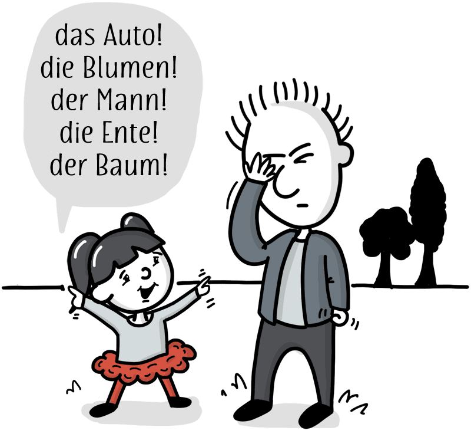

A102 - Nomen
Nomen - Kata Benda

Kapitalisierung
Nomen atau kata benda dalam bahasa Jerman selalu dimulai dengan huruf besar. Apakah orang, tempat atau benda benda, semuanya dikapitalisasi.
Es sind vier Stifte und drei Katzen in meiner Tasche.
Jadi kalau anda melihat kalimat di atas, kira kira kata mana saja yang merupakan kata benda ? Tentunya kata kata yang dimulai dengan huruf besar : Stifte, Katzen dan Tasche
Kalimat di atas artinya : Ada empat pensil (Stiften) dan tiga kucing (Katze) di dalam tas (Tasche) milikku .
Jadi kapitalisasi atau penulisan dengan huruf besar dari semua kata benda akan membantu anda untuk mengidentifikasi kata benda di setiap kalimat.
Genus
Dan salah satu yang unik di bahasa Jerman adalah bahwa setiap Nomen memiliki Genus atau jenis kelamin. Ada tiga Genus di bahasa Jerman yaitu maskulin, feminin dan neutral. Nomen akan mempunyai Artikel yang sesuai dengan Genusnya.
Semua kata benda baik yang mengacu kepada makhluk hidup, contoh:
| Genus | Nomen | |
|---|---|---|
| Maskulin | Der Mann | Play |
| Feminin | Die Frau | Play |
| Neutral | Das Kind | Play |
| Plural | Die Kinder | Play |
Kata benda untuk benda mati baik yang benda nyata ataupun yang merupkan abstrak, semuanya mempunyai Genus :
| Deutsch | Ind. | Deutsch | Ind. |
|---|---|---|---|
| der Tisch | meja | der Durst | haus |
| die Gabel | garpu | die Liebe | cinta |
| das Handy | handphone | das Jahr | tahun |
Sewaktu mencoba menghapalkan Nomen selalu gunakanlah artikel mereka karena nantinya akan sangat penting.
Salah satu hal yang unik dalam bahasa Jerman adalah bahwa semua kata benda (Nomen) dikapitalisasi atau dengan kata lain, kata benda selalu dimulai dengan huruf besar !
Ini akan sangat membantu untuk membedakan antara kata kerja dan kata benda. Contohnya adalah kata kerja essen yang berarti memakan dan kata benda Essen yang berarti makanan.
Wir essen das Essen = kami memakan makanan itu
Plural
Apabila benda yang diacu ada lebih dari satu maka kita menggunakan plural. Artikel dari Plural selalu dalam bentuk die
das Auto (mobil) -> die Autos (mobil mobil)
der Mann (pria) -> die Männer (para pria)
die Ente (bebek) -> die Enten (para bebek)
Jens dan Keponakannya di taman
Keponakan Jens yang masih kecil senang sekali untuk menunjuk ke segala hal dan menyebutkan nama dan artikel benda benda tersebut dalam bahasa Jerman.
Ayo kita dengarkan dia:
Maskulin
 |
der Mann pria |
Play |
| der Baum pohon |
Play | |
| der Fluß sungai |
Play | |
| der Ball bola |
Play | |
 |
der Rucksack ransel |
Play |
| der Vogel burung |
Play |
Feminin
| die Frau wanita |
Play | |
 |
die Ente bebek |
Play |
 |
die Wolke awan |
Play |
| die Uhr Jam |
Play | |
| die Straße Jalanan |
Play | |
| die Kamera kamera |
Play |
Neutral
| das Kind anak kecil |
Play | |
 |
das Buch buku |
Play |
 |
das Auto mobil |
Play |
| das Rad sepeda |
Play |
Plural
| die Kinder anak anak |
Play | |
 |
die Schuhe (sepasang) sepatu |
Play |
 |
die Blumen bunga bunga |
Play |
Kembali ke Plural
Dalam bahasa Indonesia menunjukan bahwa barang ada lebih dari satu maka kita biasanya mengulangi kata benda. Contoh: rumah rumah atau *teman teman
Sayangnya bentuk jamak / plural dalam bahasa Jerman ada banyak sekali bentuknya. Tidak ada aturan baku yang bisa kita hapalkan untuk bisa mengetahui segala kemungkinan variasinya. Jadi pada ujungnya pelajar bahasa Jerman memang harus menghapalkannya sedikit demi sedikit.
Ada tiga hal utama yang dilakukan untuk menunjukkan bentuk jamak dalam bahasa Jerman:
- Menambahkan suffix / akhiran : -s, -n, -en, -e, -er
- Mengubah huruf vokal menjadi umlaut, misalkan der Arzt -> die Ärzte
- Mengubah vokal DAN menambahkan suffix
Berikut adalah beberapa contoh untuk memperlihatkan variasi variasi yang sering terjadi untuk pembentukan kata jamak
| ditambah -s | ||
| mobil | das Auto | die Autos |
| radio | das Radio | die Radios |
| Ditambah -n | ||
| tempat tidur | das Bett | die Betten |
| pisang | die Banane | die Bananen |
| jaket | die Jacke | die Jacken |
| Ditambah -e | ||
| lagu | das Lied | die Lieder |
| anak | das Kind | die Kinder |
| tempat tidur | das Bett | die Betten |
| Umlaut | ||
| ibu | die Mutter | die Mütter |
| Suffix dan Umlaut | ||
| kereta | der Zug | die Züge |
| rumah | das Haus | die Häuser |